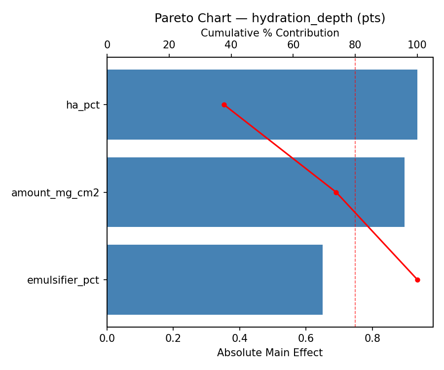
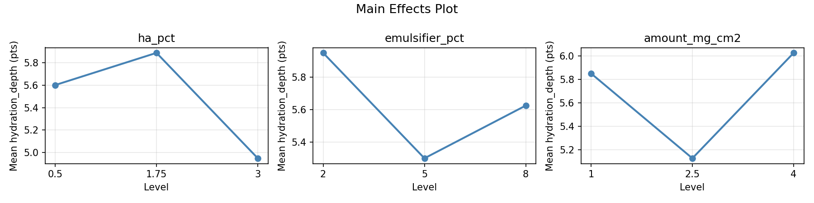
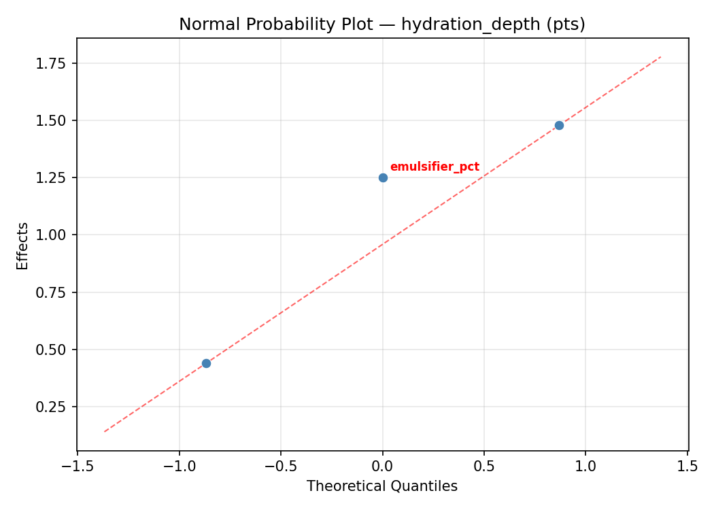
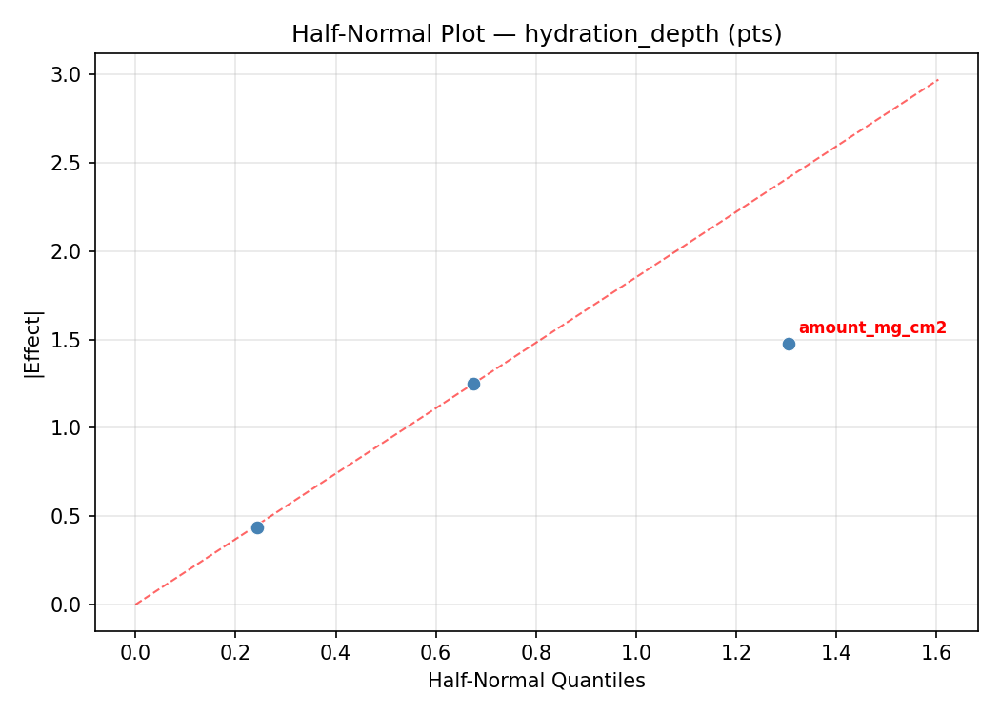
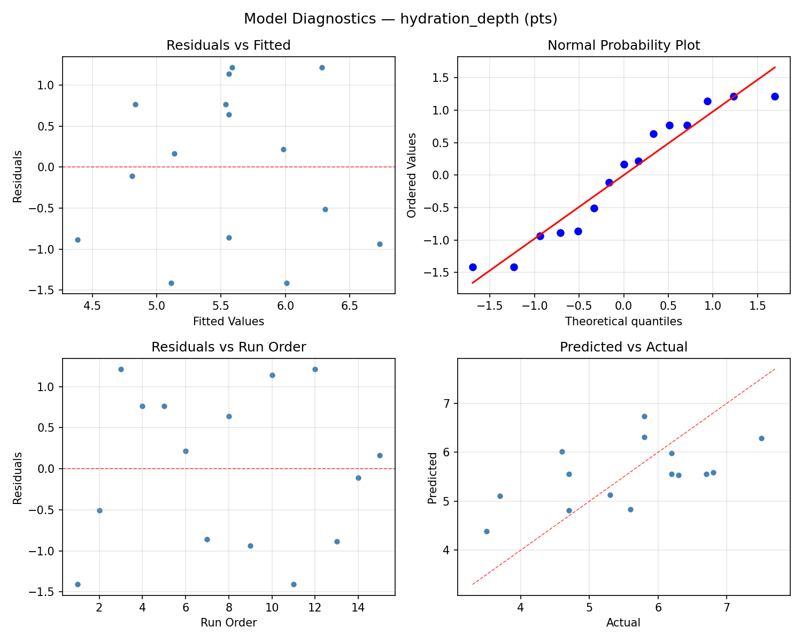
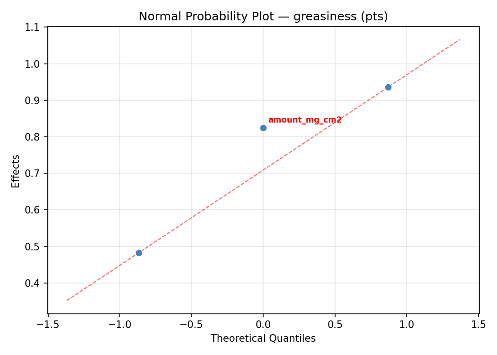
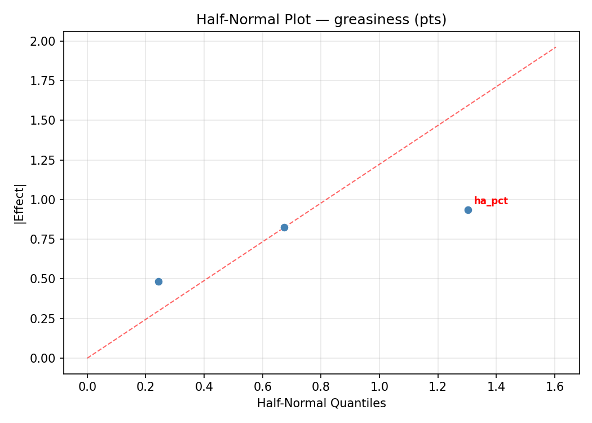
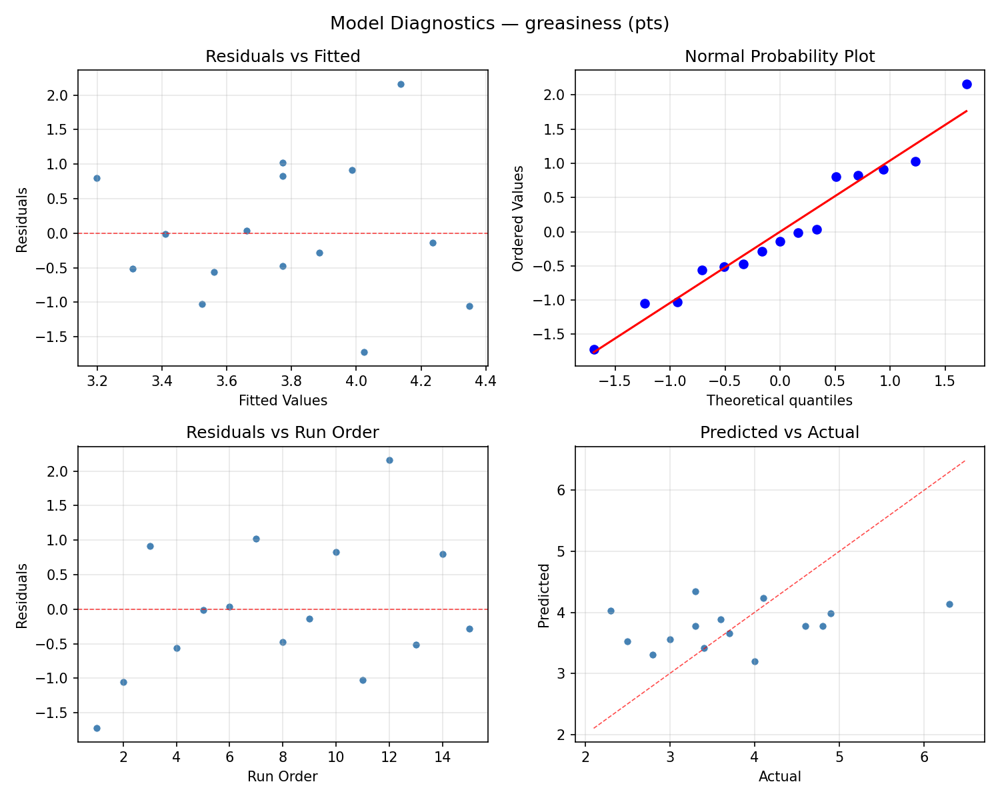
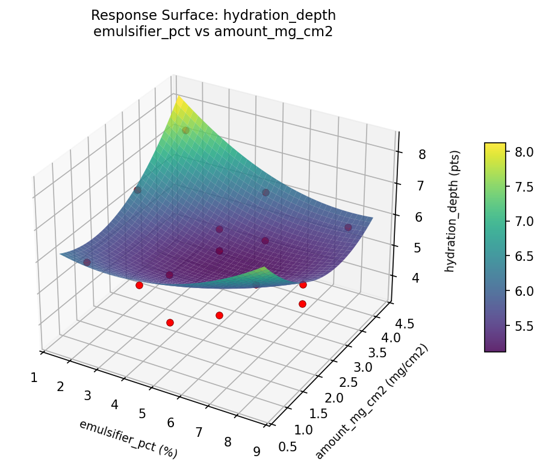

Summary
This experiment investigates moisturizer absorption rate. Box-Behnken design to maximize hydration depth and minimize greasy residue by tuning hyaluronic acid concentration, emulsifier ratio, and application amount.
The design varies 3 factors: ha pct (%), ranging from 0.5 to 3.0, emulsifier pct (%), ranging from 2 to 8, and amount mg cm2 (mg/cm2), ranging from 1 to 4. The goal is to optimize 2 responses: hydration depth (pts) (maximize) and greasiness (pts) (minimize). Fixed conditions held constant across all runs include base = oil_in_water, ph = 5.5.
A Box-Behnken design was chosen because it efficiently fits quadratic models with 3 continuous factors while avoiding extreme corner combinations — requiring only 15 runs instead of the 8 needed for a full factorial at two levels.
Quadratic response surface models were fitted to capture potential curvature and factor interactions. The RSM contour plots below visualize how pairs of factors jointly affect each response.
Key Findings
For hydration depth, the most influential factors were amount mg cm2 (40.3%), emulsifier pct (32.3%), ha pct (27.3%). The best observed value was 7.5 (at ha pct = 0.5, emulsifier pct = 5, amount mg cm2 = 4).
For greasiness, the most influential factors were emulsifier pct (59.4%), amount mg cm2 (24.2%), ha pct (16.4%). The best observed value was 2.3 (at ha pct = 1.75, emulsifier pct = 5, amount mg cm2 = 2.5).
Recommended Next Steps
- Run confirmation experiments at the predicted optimal settings to validate the model.
- Consider whether any fixed factors should be varied in a future study.
Experimental Setup
Factors
| Factor | Low | High | Unit |
|---|
ha_pct | 0.5 | 3.0 | % |
emulsifier_pct | 2 | 8 | % |
amount_mg_cm2 | 1 | 4 | mg/cm2 |
Fixed: base = oil_in_water, ph = 5.5
Responses
| Response | Direction | Unit |
|---|
hydration_depth | ↑ maximize | pts |
greasiness | ↓ minimize | pts |
Configuration
{
"metadata": {
"name": "Moisturizer Absorption Rate",
"description": "Box-Behnken design to maximize hydration depth and minimize greasy residue by tuning hyaluronic acid concentration, emulsifier ratio, and application amount"
},
"factors": [
{
"name": "ha_pct",
"levels": [
"0.5",
"3.0"
],
"type": "continuous",
"unit": "%"
},
{
"name": "emulsifier_pct",
"levels": [
"2",
"8"
],
"type": "continuous",
"unit": "%"
},
{
"name": "amount_mg_cm2",
"levels": [
"1",
"4"
],
"type": "continuous",
"unit": "mg/cm2"
}
],
"fixed_factors": {
"base": "oil_in_water",
"ph": "5.5"
},
"responses": [
{
"name": "hydration_depth",
"optimize": "maximize",
"unit": "pts"
},
{
"name": "greasiness",
"optimize": "minimize",
"unit": "pts"
}
],
"settings": {
"operation": "box_behnken",
"test_script": "use_cases/219_moisturizer_absorption/sim.sh"
}
}
Experimental Matrix
The Box-Behnken Design produces 15 runs. Each row is one experiment with specific factor settings.
| Run | ha_pct | emulsifier_pct | amount_mg_cm2 |
|---|
| 1 | 1.75 | 2 | 1 |
| 2 | 1.75 | 5 | 2.5 |
| 3 | 3 | 5 | 4 |
| 4 | 3 | 5 | 1 |
| 5 | 1.75 | 5 | 2.5 |
| 6 | 1.75 | 5 | 2.5 |
| 7 | 0.5 | 5 | 4 |
| 8 | 3 | 2 | 2.5 |
| 9 | 1.75 | 2 | 4 |
| 10 | 3 | 8 | 2.5 |
| 11 | 0.5 | 5 | 1 |
| 12 | 1.75 | 8 | 4 |
| 13 | 0.5 | 2 | 2.5 |
| 14 | 0.5 | 8 | 2.5 |
| 15 | 1.75 | 8 | 1 |
Step-by-Step Workflow
1
Preview the design
$ doe info --config use_cases/219_moisturizer_absorption/config.json
2
Generate the runner script
$ doe generate --config use_cases/219_moisturizer_absorption/config.json \
--output use_cases/219_moisturizer_absorption/results/run.sh --seed 42
3
Execute the experiments
$ bash use_cases/219_moisturizer_absorption/results/run.sh
4
Analyze results
$ doe analyze --config use_cases/219_moisturizer_absorption/config.json
5
Get optimization recommendations
$ doe optimize --config use_cases/219_moisturizer_absorption/config.json
6
Multi-objective optimization
With 2 competing responses, use --multi to find the best compromise via Derringer–Suich desirability.
$ doe optimize --config use_cases/219_moisturizer_absorption/config.json --multi
7
Generate the HTML report
$ doe report --config use_cases/219_moisturizer_absorption/config.json \
--output use_cases/219_moisturizer_absorption/results/report.html
Features Exercised
| Feature | Value |
|---|
| Design type | box_behnken |
| Factor types | continuous (all 3) |
| Arg style | double-dash |
| Responses | 2 (hydration_depth ↑, greasiness ↓) |
| Total runs | 15 |
Analysis Results
Generated from actual experiment runs using the DOE Helper Tool.
Response: hydration_depth
Top factors: amount_mg_cm2 (40.3%), emulsifier_pct (32.3%), ha_pct (27.3%).
ANOVA
| Source | DF | SS | MS | F | p-value |
|---|
| Source | DF | SS | MS | F | p-value |
| ha_pct | 2 | 2.6274 | 1.3137 | 9.165 | 0.0085 |
| emulsifier_pct | 2 | 3.6885 | 1.8442 | 12.867 | 0.0032 |
| amount_mg_cm2 | 2 | 5.7442 | 2.8721 | 20.038 | 0.0008 |
| Lack | of | Fit | 6 | 5.9092 | 0.9849 |
| Pure | Error | 2 | 0.2867 | | |
| Error | 8 | 6.1959 | 0.1433 | | |
| Total | 14 | 18.2560 | 1.3040 | | |
Pareto Chart

Main Effects Plot

Normal Probability Plot of Effects

Half-Normal Plot of Effects

Model Diagnostics

Response: greasiness
Top factors: emulsifier_pct (59.4%), amount_mg_cm2 (24.2%), ha_pct (16.4%).
ANOVA
| Source | DF | SS | MS | F | p-value |
|---|
| Source | DF | SS | MS | F | p-value |
| ha_pct | 2 | 0.6775 | 0.3388 | 2.747 | 0.1236 |
| emulsifier_pct | 2 | 8.9743 | 4.4872 | 36.382 | 0.0001 |
| amount_mg_cm2 | 2 | 1.4047 | 0.7023 | 5.695 | 0.0290 |
| Lack | of | Fit | 6 | 4.2061 | 0.7010 |
| Pure | Error | 2 | 0.2467 | | |
| Error | 8 | 4.4528 | 0.1233 | | |
| Total | 14 | 15.5093 | 1.1078 | | |
Pareto Chart

Main Effects Plot

Normal Probability Plot of Effects

Half-Normal Plot of Effects

Model Diagnostics

Response Surface Plots
3D surfaces fitted with quadratic RSM. Red dots are observed data points.
greasiness emulsifier pct vs amount mg cm2

greasiness ha pct vs amount mg cm2

greasiness ha pct vs emulsifier pct

hydration depth emulsifier pct vs amount mg cm2

hydration depth ha pct vs amount mg cm2

hydration depth ha pct vs emulsifier pct

Multi-Objective Optimization
When responses compete, Derringer–Suich desirability finds the best compromise.
Each response is scaled to a 0–1 desirability, then combined via a weighted geometric mean.
Overall Desirability
D = 0.8479
Per-Response Desirability
| Response | Weight | Desirability | Predicted | Dir |
|---|
hydration_depth |
1.5 |
|
7.79 1.0000 7.79 pts |
↑ |
greasiness |
1.0 |
|
3.59 0.6619 3.59 pts |
↓ |
Recommended Settings
| Factor | Value |
|---|
ha_pct | 0.5 % |
emulsifier_pct | 2 % |
amount_mg_cm2 | 1 mg/cm2 |
Source: from RSM model prediction
Trade-off Summary
Sacrifice = how much worse than single-objective best.
| Response | Predicted | Best Observed | Sacrifice |
|---|
greasiness | 3.59 | 2.30 | +1.29 |
Top 3 Runs by Desirability
| Run | D | Factor Settings |
|---|
| #8 | 0.6856 | ha_pct=0.5, emulsifier_pct=5, amount_mg_cm2=1 |
| #6 | 0.6499 | ha_pct=3, emulsifier_pct=8, amount_mg_cm2=2.5 |
Model Quality
| Response | R² | Type |
|---|
greasiness | 0.8448 | quadratic |
Full Multi-Objective Output
============================================================
MULTI-OBJECTIVE OPTIMIZATION
Method: Derringer-Suich Desirability Function
============================================================
Overall desirability: D = 0.8479
Response Weight Desirability Predicted Direction
---------------------------------------------------------------------
hydration_depth 1.5 1.0000 7.79 pts ↑
greasiness 1.0 0.6619 3.59 pts ↓
Recommended settings:
ha_pct = 0.5 %
emulsifier_pct = 2 %
amount_mg_cm2 = 1 mg/cm2
(from RSM model prediction)
Trade-off summary:
hydration_depth: 7.79 (best observed: 7.50, sacrifice: -0.29)
greasiness: 3.59 (best observed: 2.30, sacrifice: +1.29)
Model quality:
hydration_depth: R² = 0.9313 (quadratic)
greasiness: R² = 0.8448 (quadratic)
Top 3 observed runs by overall desirability:
1. Run #5 (D=0.6908): ha_pct=0.5, emulsifier_pct=2, amount_mg_cm2=2.5
2. Run #8 (D=0.6856): ha_pct=0.5, emulsifier_pct=5, amount_mg_cm2=1
3. Run #6 (D=0.6499): ha_pct=3, emulsifier_pct=8, amount_mg_cm2=2.5
Full Analysis Output
=== Main Effects: hydration_depth ===
Factor Effect Std Error % Contribution
--------------------------------------------------------------
amount_mg_cm2 1.4964 0.2948 40.3%
emulsifier_pct 1.2000 0.2948 32.3%
ha_pct 1.0143 0.2948 27.3%
=== ANOVA Table: hydration_depth ===
Source DF SS MS F p-value
-----------------------------------------------------------------------------
ha_pct 2 2.6274 1.3137 9.165 0.0085
emulsifier_pct 2 3.6885 1.8442 12.867 0.0032
amount_mg_cm2 2 5.7442 2.8721 20.038 0.0008
Lack of Fit 6 5.9092 0.9849 6.871 0.1325
Pure Error 2 0.2867 0.1433
Error 8 6.1959 0.1433
Total 14 18.2560 1.3040
=== Summary Statistics: hydration_depth ===
ha_pct:
Level N Mean Std Min Max
------------------------------------------------------------
0.5 4 5.6000 1.3191 3.7000 6.7000
1.75 7 5.9143 0.8859 4.7000 7.5000
3 4 4.9000 1.3784 3.5000 6.8000
emulsifier_pct:
Level N Mean Std Min Max
------------------------------------------------------------
2 4 5.6250 0.8461 4.7000 6.7000
5 7 5.1000 1.1662 3.5000 6.3000
8 4 6.3000 1.1916 4.7000 7.5000
amount_mg_cm2:
Level N Mean Std Min Max
------------------------------------------------------------
1 4 5.6500 1.6422 3.5000 7.5000
2.5 7 6.0714 0.7204 4.7000 6.8000
4 4 4.5750 0.6602 3.7000 5.3000
=== Main Effects: greasiness ===
Factor Effect Std Error % Contribution
--------------------------------------------------------------
emulsifier_pct 1.8250 0.2718 59.4%
amount_mg_cm2 0.7429 0.2718 24.2%
ha_pct 0.5036 0.2718 16.4%
=== ANOVA Table: greasiness ===
Source DF SS MS F p-value
-----------------------------------------------------------------------------
ha_pct 2 0.6775 0.3388 2.747 0.1236
emulsifier_pct 2 8.9743 4.4872 36.382 0.0001
amount_mg_cm2 2 1.4047 0.7023 5.695 0.0290
Lack of Fit 6 4.2061 0.7010 5.684 0.1572
Pure Error 2 0.2467 0.1233
Error 8 4.4528 0.1233
Total 14 15.5093 1.1078
=== Summary Statistics: greasiness ===
ha_pct:
Level N Mean Std Min Max
------------------------------------------------------------
0.5 4 3.4250 0.8694 2.5000 4.6000
1.75 7 3.9286 0.7111 3.0000 4.9000
3 4 3.8500 1.7823 2.3000 6.3000
emulsifier_pct:
Level N Mean Std Min Max
------------------------------------------------------------
2 4 4.0750 0.4113 3.6000 4.6000
5 7 3.0000 0.5033 2.3000 3.7000
8 4 4.8250 1.2258 3.3000 6.3000
amount_mg_cm2:
Level N Mean Std Min Max
------------------------------------------------------------
1 4 3.7750 0.9215 2.8000 4.9000
2.5 7 4.0429 1.1238 3.0000 6.3000
4 4 3.3000 1.1518 2.3000 4.8000
Optimization Recommendations
=== Optimization: hydration_depth ===
Direction: maximize
Best observed run: #3
ha_pct = 0.5
emulsifier_pct = 5
amount_mg_cm2 = 4
Value: 7.5
RSM Model (linear, R² = 0.1127, Adj R² = -0.1293):
Coefficients:
intercept +5.5600
ha_pct -0.1250
emulsifier_pct +0.0625
amount_mg_cm2 -0.4875
RSM Model (quadratic, R² = 0.7752, Adj R² = 0.3705):
Coefficients:
intercept +4.9667
ha_pct -0.1250
emulsifier_pct +0.0625
amount_mg_cm2 -0.4875
ha_pct*emulsifier_pct +0.9000
ha_pct*amount_mg_cm2 -0.7000
emulsifier_pct*amount_mg_cm2 +0.6750
ha_pct^2 +0.5042
emulsifier_pct^2 -0.3708
amount_mg_cm2^2 +0.9792
Curvature analysis:
amount_mg_cm2 coef=+0.9792 convex (has a minimum)
ha_pct coef=+0.5042 convex (has a minimum)
emulsifier_pct coef=-0.3708 concave (has a maximum)
Notable interactions:
ha_pct*emulsifier_pct coef=+0.9000 (synergistic)
ha_pct*amount_mg_cm2 coef=-0.7000 (antagonistic)
emulsifier_pct*amount_mg_cm2 coef=+0.6750 (synergistic)
Predicted optimum (from quadratic model, at observed points):
ha_pct = 3
emulsifier_pct = 5
amount_mg_cm2 = 1
Predicted value: 7.5125
Surface optimum (via L-BFGS-B, quadratic model):
ha_pct = 3
emulsifier_pct = 6.16292
amount_mg_cm2 = 1
Predicted value: 7.5682
Model quality: Good fit — general trends are captured, some noise remains.
Factor importance:
1. amount_mg_cm2 (effect: 1.5, contribution: 56.4%)
2. ha_pct (effect: 0.6, contribution: 22.7%)
3. emulsifier_pct (effect: 0.5, contribution: 20.9%)
=== Optimization: greasiness ===
Direction: minimize
Best observed run: #1
ha_pct = 1.75
emulsifier_pct = 5
amount_mg_cm2 = 2.5
Value: 2.3
RSM Model (linear, R² = 0.1979, Adj R² = -0.0208):
Coefficients:
intercept +3.7733
ha_pct +0.4500
emulsifier_pct -0.3250
amount_mg_cm2 -0.2750
RSM Model (quadratic, R² = 0.8424, Adj R² = 0.5586):
Coefficients:
intercept +3.1000
ha_pct +0.4500
emulsifier_pct -0.3250
amount_mg_cm2 -0.2750
ha_pct*emulsifier_pct -0.0750
ha_pct*amount_mg_cm2 -1.0750
emulsifier_pct*amount_mg_cm2 +0.6250
ha_pct^2 +0.6375
emulsifier_pct^2 -0.1625
amount_mg_cm2^2 +0.7875
Curvature analysis:
amount_mg_cm2 coef=+0.7875 convex (has a minimum)
ha_pct coef=+0.6375 convex (has a minimum)
emulsifier_pct coef=-0.1625 concave (has a maximum)
Notable interactions:
ha_pct*amount_mg_cm2 coef=-1.0750 (antagonistic)
emulsifier_pct*amount_mg_cm2 coef=+0.6250 (synergistic)
Predicted optimum (from quadratic model, at observed points):
ha_pct = 3
emulsifier_pct = 5
amount_mg_cm2 = 1
Predicted value: 6.3250
Surface optimum (via L-BFGS-B, quadratic model):
ha_pct = 0.5
emulsifier_pct = 8
amount_mg_cm2 = 1.14286
Predicted value: 2.2304
Model quality: Good fit — general trends are captured, some noise remains.
Factor importance:
1. ha_pct (effect: 1.0, contribution: 38.3%)
2. amount_mg_cm2 (effect: 1.0, contribution: 37.8%)
3. emulsifier_pct (effect: 0.6, contribution: 23.9%)